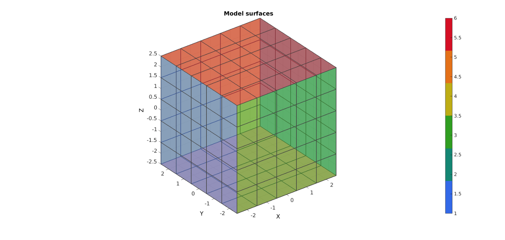
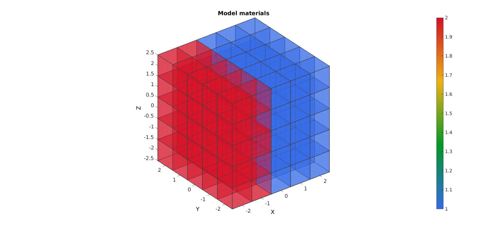
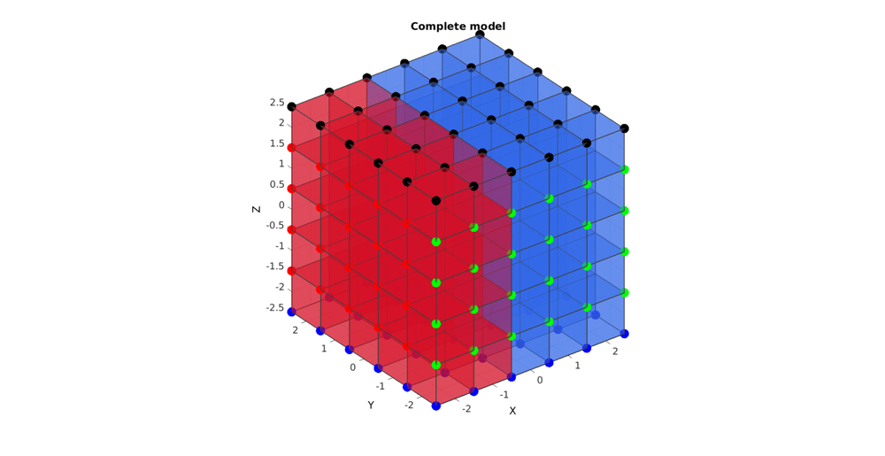
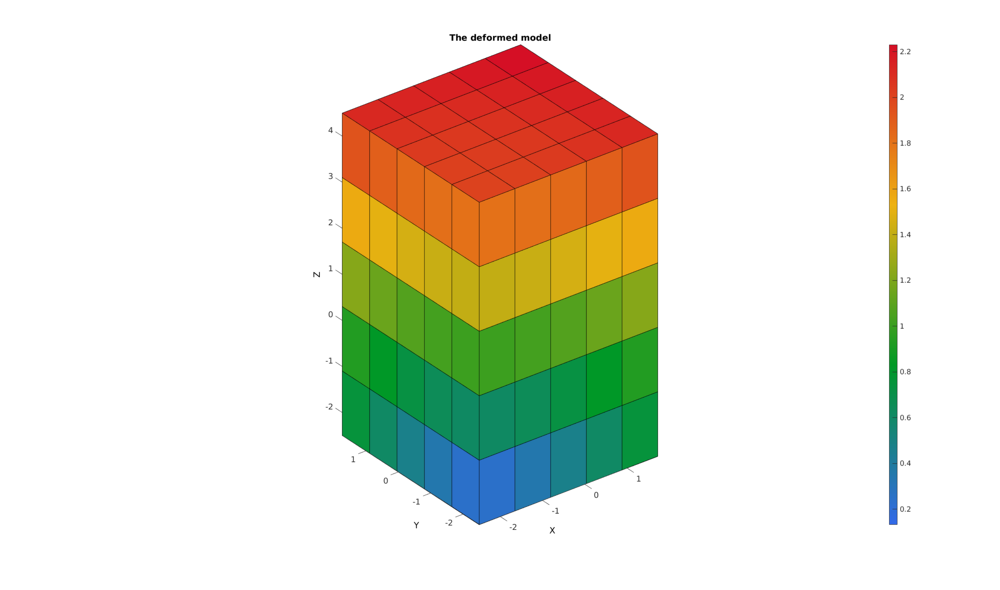

DEMO_FEBio_cube_tension
Below is a demonstration for: 1) Creating a simple model in MATLAB 2) The specification of boundary conditions for FEBio 4) Running an FEBio job with MATLAB 5) Importing FEBio results into MATLAB
Contents
clear; close all; clc;
Plot settings
figColor='w'; figColorDef='white'; fontSize=15; faceAlpha1=0.5; faceAlpha2=1; edgeColor=0.25*ones(1,3); edgeWidth=1.5; markerSize=50;
Control parameters
% path names defaultFolder = fileparts(fileparts(mfilename('fullpath'))); savePath=fullfile(defaultFolder,'data','temp'); modelNameEnd='tempModel'; modelName=fullfile(savePath,modelNameEnd); %Specifying dimensions and number of elements sampleWidth=5; sampleThickness=5; sampleHeight=5; pointSpacings=[1 1 1]; numElementsWidth=round(sampleWidth/pointSpacings(1)); numElementsThickness=round(sampleThickness/pointSpacings(2)); numElementsHeight=round(sampleHeight/pointSpacings(3)); displacementMagnitude=[0 0 2];
CREATING MESHED BOX
%Create box 1 boxDim=[sampleWidth sampleThickness sampleHeight]; %Dimensions boxEl=[numElementsWidth numElementsThickness numElementsHeight]; %Number of elements [box1]=hexMeshBox(boxDim,boxEl); E=box1.E; V=box1.V; Fb=box1.Fb; faceBoundaryMarker=box1.faceBoundaryMarker; X=V(:,1); Y=V(:,2); Z=V(:,3); VE=[mean(X(E),2) mean(Y(E),2) mean(Z(E),2)]; logicMaterial_1=VE(:,1)<0; elementMaterialIndices=logicMaterial_1+1; %Creating faces for plotting [F,CF]=hex2patch(E,elementMaterialIndices);
% Plotting boundary surfaces hf=figuremax(figColor,figColorDef); title('Model surfaces','FontSize',fontSize); xlabel('X','FontSize',fontSize); ylabel('Y','FontSize',fontSize); zlabel('Z','FontSize',fontSize); hold on; patch('Faces',Fb,'Vertices',V,'FaceColor','flat','CData',faceBoundaryMarker,'FaceAlpha',faceAlpha1,'lineWidth',edgeWidth,'edgeColor',edgeColor); colormap(jet(6)); colorbar; set(gca,'FontSize',fontSize); view(3); axis tight; axis equal; grid on; % camlight headlight; drawnow; % Plotting model hf=figuremax(figColor,figColorDef); title('Model materials','FontSize',fontSize); xlabel('X','FontSize',fontSize); ylabel('Y','FontSize',fontSize); zlabel('Z','FontSize',fontSize); hold on; patch('Faces',F,'Vertices',V,'FaceColor','flat','CData',CF,'FaceAlpha',faceAlpha1,'lineWidth',edgeWidth,'edgeColor',edgeColor); colormap jet; colorbar; set(gca,'FontSize',fontSize); view(3); axis tight; axis equal; grid on; % camlight headlight; drawnow; 
DEFINE BC's
%Supported nodes logicRigid_X=faceBoundaryMarker==1; Fr=Fb(logicRigid_X,:); bcRigidList_X=unique(Fr(:)); logicRigid_Y=faceBoundaryMarker==3; Fr=Fb(logicRigid_Y,:); bcRigidList_Y=unique(Fr(:)); logicRigid_Z=faceBoundaryMarker==5; Fr=Fb(logicRigid_Z,:); bcRigidList_Z=unique(Fr(:)); %Prescribed displacement nodes logicPrescribe=faceBoundaryMarker==6; Fr=Fb(logicPrescribe,:); bcPrescribeList=unique(Fr(:)); bcPrescribeMagnitudes=displacementMagnitude(ones(1,numel(bcPrescribeList)),:);
Visualize BC's
hf=figuremax(figColor,figColorDef); title('Complete model','FontSize',fontSize); xlabel('X','FontSize',fontSize); ylabel('Y','FontSize',fontSize); zlabel('Z','FontSize',fontSize); hold on; patch('Faces',F,'Vertices',V,'FaceColor','flat','CData',CF,'FaceAlpha',faceAlpha1,'lineWidth',edgeWidth,'edgeColor',edgeColor); plotV(V(bcRigidList_X,:),'r.','MarkerSize',markerSize); plotV(V(bcRigidList_Y,:),'g.','MarkerSize',markerSize); plotV(V(bcRigidList_Z,:),'b.','MarkerSize',markerSize); plotV(V(bcPrescribeList,:),'k.','MarkerSize',markerSize); set(gca,'FontSize',fontSize); view(3); axis tight; axis equal; grid on; drawnow;
CONSTRUCTING FEB MODEL
FEB_struct.febio_spec.version='2.0'; FEB_struct.Module.Type='solid'; % Defining file names FEB_struct.run_filename=[modelName,'.feb']; %FEB file name FEB_struct.run_logname=[modelName,'.txt']; %FEBio log file name febMatID=elementMaterialIndices; febMatID(elementMaterialIndices==-2)=1; febMatID(elementMaterialIndices==-3)=2; %Creating FEB_struct FEB_struct.Geometry.Nodes=V; FEB_struct.Geometry.Elements={E}; %The element sets FEB_struct.Geometry.ElementType={'hex8'}; %The element types FEB_struct.Geometry.ElementMat={febMatID}; FEB_struct.Geometry.ElementsPartName={'Cube'}; % DEFINING MATERIALS %Material 1 deformable block c1=1e-3; k=c1*1e3; FEB_struct.Materials{1}.Type='Mooney-Rivlin'; FEB_struct.Materials{1}.Name='cube_mat'; FEB_struct.Materials{1}.Properties={'c1','c2','k'}; FEB_struct.Materials{1}.Values={c1,0,k}; c1=2e-3; k=c1*1e3; FEB_struct.Materials{2}.Type='Mooney-Rivlin'; FEB_struct.Materials{2}.Name='cube_mat'; FEB_struct.Materials{2}.Properties={'c1','c2','k'}; FEB_struct.Materials{2}.Values={c1,0,k}; %Control section FEB_struct.Control.AnalysisType='static'; FEB_struct.Control.Properties={'time_steps','step_size',... 'max_refs','max_ups',... 'dtol','etol','rtol','lstol'}; FEB_struct.Control.Values={20,0.05,... 25,0,... 0.001,0.01,0,0.9}; FEB_struct.Control.TimeStepperProperties={'dtmin','dtmax','max_retries','opt_iter','aggressiveness'}; FEB_struct.Control.TimeStepperValues={1e-4,0.05,5,10,1}; %Defining node sets FEB_struct.Geometry.NodeSet{1}.Set=bcRigidList_X; FEB_struct.Geometry.NodeSet{1}.Name='bcRigidList_X'; FEB_struct.Geometry.NodeSet{2}.Set=bcRigidList_Y; FEB_struct.Geometry.NodeSet{2}.Name='bcRigidList_Y'; FEB_struct.Geometry.NodeSet{3}.Set=bcRigidList_Z; FEB_struct.Geometry.NodeSet{3}.Name='bcRigidList_Z'; % FEB_struct.Geometry.NodeSet{4}.Set=bcPrescribeList; % FEB_struct.Geometry.NodeSet{4}.Name='bcPrescribeList'; %Adding BC information FEB_struct.Boundary.Fix{1}.bc='x'; FEB_struct.Boundary.Fix{1}.SetName=FEB_struct.Geometry.NodeSet{1}.Name; FEB_struct.Boundary.Fix{2}.bc='y'; FEB_struct.Boundary.Fix{2}.SetName=FEB_struct.Geometry.NodeSet{2}.Name; FEB_struct.Boundary.Fix{3}.bc='z'; FEB_struct.Boundary.Fix{3}.SetName=FEB_struct.Geometry.NodeSet{3}.Name; %Prescribed BC's FEB_struct.Boundary.Prescribe{1}.Set=bcPrescribeList; FEB_struct.Boundary.Prescribe{1}.bc='z'; FEB_struct.Boundary.Prescribe{1}.lc=1; FEB_struct.Boundary.Prescribe{1}.nodeScale=bcPrescribeMagnitudes(:,3); %Load curves FEB_struct.LoadData.LoadCurves.id=1; FEB_struct.LoadData.LoadCurves.type={'linear'}; FEB_struct.LoadData.LoadCurves.loadPoints={[0 0;1 1;]}; %Adding output requests FEB_struct.Output.VarTypes={'displacement','stress','relative volume','shell thickness'}; %Specify log file output run_disp_output_name=[modelNameEnd,'_node_out.txt']; FEB_struct.run_output_names={run_disp_output_name}; FEB_struct.output_types={'node_data'}; FEB_struct.data_types={'ux;uy;uz'};
SAVING .FEB FILE
FEB_struct.disp_opt=0; %Display waitbars option
febStruct2febFile(FEB_struct);
%%%%%%%%%%%%%%%%%%%%%%%%%%%%%%%%%%%%%%%%%%%%% --- Writing FEBio XML object --- 18-Aug-2017 14:37:27 Adding Module level Adding Control level Adding Globals level Adding Material level Adding Geometry level ----> Adding node field ----> Adding element field ----> Adding hex8 element entries.... ----> Adding NodeSet field Adding Boundary level ----> Defining fix type boundary conditions ----> Defining prescribe type boundary conditions Adding LoadData level ----> Defining load curves Adding Output level ----> Adding plotfile field ----> Adding logfile field Writing .feb file --- Done --- 18-Aug-2017 14:37:27
RUNNING FEBIO JOB
% FEBioRunStruct.FEBioPath='C:\Program Files\febio2-2.2.6\bin\febio2.exe'; FEBioRunStruct.run_filename=FEB_struct.run_filename; FEBioRunStruct.run_logname=FEB_struct.run_logname; FEBioRunStruct.disp_on=1; FEBioRunStruct.disp_log_on=1; FEBioRunStruct.runMode='external';%'internal'; FEBioRunStruct.t_check=0.25; %Time for checking log file (dont set too small) FEBioRunStruct.maxtpi=1e99; %Max analysis time FEBioRunStruct.maxLogCheckTime=3; %Max log file checking time [runFlag]=runMonitorFEBio(FEBioRunStruct);%START FEBio NOW!!!!!!!!
%%%%%%%%%%%%%%%%%%%%%%%%%%%%%%%%%%%%%%%%%%%%% --- STARTING FEBIO JOB --- 18-Aug-2017 14:37:27 Waiting for log file... Proceeding to check log file...18-Aug-2017 14:37:27 ------- converged at time : 0.05 ------- converged at time : 0.1 ------- converged at time : 0.15 ------- converged at time : 0.2 ------- converged at time : 0.25 ------- converged at time : 0.3 ------- converged at time : 0.35 ------- converged at time : 0.4 ------- converged at time : 0.45 ------- converged at time : 0.5 ------- converged at time : 0.55 ------- converged at time : 0.6 ------- converged at time : 0.65 ------- converged at time : 0.7 ------- converged at time : 0.75 ------- converged at time : 0.8 ------- converged at time : 0.85 ------- converged at time : 0.9 ------- converged at time : 0.95 ------- converged at time : 1 --- Done --- 18-Aug-2017 14:37:28
if runFlag==1 %i.e. a succesful run % IMPORTING NODAL DISPLACEMENT RESULTS % Importing nodal displacements from a log file [~, N_disp_mat,~]=importFEBio_logfile(fullfile(savePath,FEB_struct.run_output_names{1})); %Nodal displacements DN=N_disp_mat(:,2:end,end); %Final nodal displacements % CREATING NODE SET IN DEFORMED STATE V_def=V+DN; DN_magnitude=sqrt(sum(DN.^2,2)); % % Plotting the deformed model [CF]=vertexToFaceMeasure(Fb,DN_magnitude); hf1=figuremax(figColor,figColorDef); title('The deformed model','FontSize',fontSize); xlabel('X','FontSize',fontSize); ylabel('Y','FontSize',fontSize); zlabel('Z','FontSize',fontSize); hold on; hps=patch('Faces',Fb,'Vertices',V_def,'FaceColor','flat','CData',CF); view(3); axis tight; axis equal; grid on; colormap jet; colorbar; % camlight headlight; set(gca,'FontSize',fontSize); drawnow; end

GIBBON www.gibboncode.org
Kevin Mattheus Moerman, gibbon.toolbox@gmail.com
GIBBON footer text
License: https://github.com/gibbonCode/GIBBON/blob/master/LICENSE
GIBBON: The Geometry and Image-based Bioengineering add-On. A toolbox for image segmentation, image-based modeling, meshing, and finite element analysis.
Copyright (C) 2017 Kevin Mattheus Moerman
This program is free software: you can redistribute it and/or modify it under the terms of the GNU General Public License as published by the Free Software Foundation, either version 3 of the License, or (at your option) any later version.
This program is distributed in the hope that it will be useful, but WITHOUT ANY WARRANTY; without even the implied warranty of MERCHANTABILITY or FITNESS FOR A PARTICULAR PURPOSE. See the GNU General Public License for more details.
You should have received a copy of the GNU General Public License along with this program. If not, see http://www.gnu.org/licenses/.